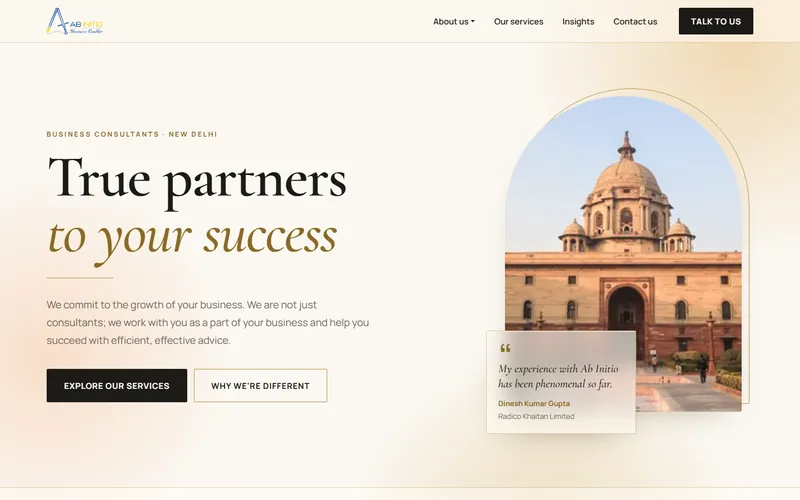

A glassmorphism design direction for abinitioindia.com. Open the theme to explore every page.

Light, warm luxury editorial: ivory and champagne with warm frosted glass and gold hairlines. Arched photo frames, serif type and a magazine-style insights page.